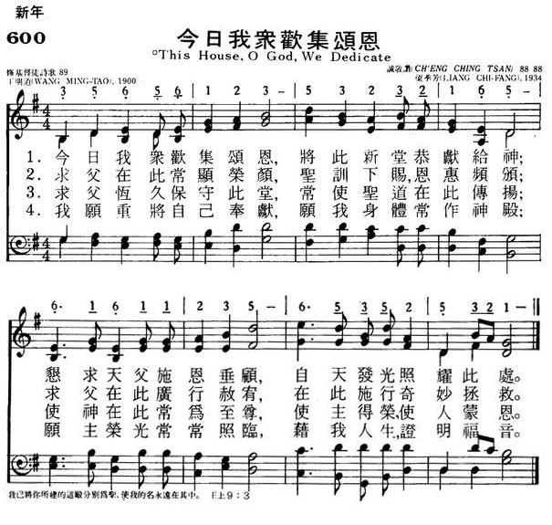
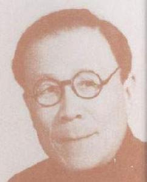

|
|
600今日我众欢集颂恩 |
|
|
1.今日我众欢集颂恩，将此新堂恭献給神；
恳求天父施恩垂顾，自天发光照耀此处。 2.求父在此常显荣颜，圣训下赐，恩惠频颁； 求父在此广行赦宥(you，音同幼)， 在此施行奇妙拯救。 3.求父�琱[保守此堂，常使圣道在此传扬； 使神在此常为至尊，使主得荣，使人蒙恩。 4.我愿重将自己奉献，愿我身体常作神殿； 愿主荣光常常照临，藉我人生，证明福音。 |
|
https://www.mred365.cn/szxg/7603.html
 |
|
|
|
|

王明道
誠敬讚 梁季芳
Liang Ji-fang(梁季芳)，中國，1930| 051 - 星辰燦爛照暗暝 | 聖詩(2009) |
一首中國調的聖誕歌，曲調名「浣紗溪」，是燕京大學的學生梁季芳（Liang Chi-Fang,）所譜的曲。該樂曲完全用漢族五聲音階，即祇有1,2,3,5,6五聲，是單聲曲調，此乃30 - 40年代的典型中國創作曲調，這首歌，以後配以和聲，祗有最後兩句是四部合唱。
明星燦爛
http://www.mbcsfv.org/chinese/library/hymncampanions/187.html- 燕京大學與《普天頌讚》：梁季芳
https://www.cclc.org.hk/wp-content/uploads/isbn9789622942226.pdf
第一輯 普頌詩伴
- 一顆耀揚星光的隕落：梁耀揚
- 民眾聖歌作者趙紫宸
- 中文譯詩泰斗劉廷芳博士
- 楊蔭瀏的雙重角色
- 一首「德冠章戴」的聖詩
- 〈青年向上歌〉的一段重要小插曲
- 燕京大學與《普天頌讚》：李抱忱
- 燕京大學與《普天頌讚》：梁季芳
- 燕京大學與《普天頌讚》：陳夢家
- 燕京大學與《普天頌讚》：范天祥與范天祥夫人
- 燕京大學與《普天頌讚》：許地山
- 燕京大學與《普天頌讚》：田景福
王明道
中國教會著名基督徒布道家、作家；嫉惡如仇，剛正不阿，為信仰甘心受苦，寧愿坐穿牢底也不違背自己良心的基督徒鐵人。
北京基督徒會堂
北京, 上海

王明道於1900年7月25日（光緒二十六年）生於北京，正值庚子年義和團運動爆發之年。其父名王子厚，在北京美以美會所開設的同仁醫院做醫生， 30歲時與李文義結婚。李文義年少時曾在倫敦會在北京所辦的教會學校讀書。婚後二人共育有五個孩子，王明道排行最末。不幸的是，其他三個孩子都先後夭折，只有長女和王明道得以存活。
在王明道尚未出生之前，義和團亂起，以“扶清滅洋”為口號，四處追殺“洋人”，許多外國人和中國基督徒紛紛躲入東交民巷使館區內避難，王子厚攜著懷有身孕的妻子和長女也在其中。由於義和團攻擊猛烈，使館區岌岌可危。膽小的王子厚唯恐落入義和團手中，竟撇下母女二人和尚未出生的孩子，在花園中自縊身亡。此后不久，李文義在東交民巷生了王明道，為他接生的外婆給他取了個乳名叫“鐵子”。不想，日後的王明道人如其名，一身錚錚鐵骨，威武不屈。
在動亂中的孤兒寡母欲謀生計實在不易，王明道童年時經常忍饑挨餓，故身體孱弱，經常生病。在其生長的大雜院里，皆為社會下層三教九流各色人等，故其從小就體會到社會丑惡及人心之險惡，從而也造就出他嫉惡如仇的性格。
王明道自幼酷愛讀書，在母親的幫助下，入學前就已讀過三字經、百家姓、千字文、明賢集，還有聖經、天路歷程，以及正道啟蒙等基督教書籍。九歲時入倫敦會創辦的萃文小學讀書，母親為他取了個學名叫“永盛”，即永遠昌盛之意。小永盛每天除學習四書五經、算數和國文等課程外，還經常參加學校中各種宗教活動，如聖經課、崇拜聚會和禱告會等。由於母親是倫敦會的教友，故亦經常帶他到教會中參加崇拜等其他教會活動。由此可見，王明道童年和少年時期，一方面受到傳統儒家思想的熏陶，一方面也受到基督教信仰的影響。
雖然如此，年少的王明道和當時許多學生一樣，對宗教活動不大感興趣。在其自傳《五十年來》中，他說：“我一直到十四歲的春季，從禮拜堂中不但甚麼也沒有得著，而且看聚會是一件最令人頭痛的事”（14頁）。但他對生之追尋，對死之歸宿等問題卻自年少時就深為關切，而中國的傳統思想觀念卻不能給他一個滿意的答案。故他在思想上十分彷徨，生活上隨波逐流。直到1914年春，一位基督徒諍友對他的勸誡和帶領，才使他的人生發生了轉機。這位朋友敬虔的基督徒生活，以及對王明道生活上的過失“嚴厲的責備”，使王明道深為敬重。在他的帶領下，王明道開始閱讀當時基督教青年會書報部干事謝洪賚的著作，從而使王明道的思想產生極大的改變。“我開始明白人生的意義、人生的責任。我開始恨惡一切的罪惡與不義。我開始羨慕聖潔良善的人生”（同上，15頁）。這是王明道屬靈生命的開始。同年復活節，他在倫敦會的一所禮拜堂里受洗。這期間他經歷了重生的經驗，生命發生了根本的轉變，與前判若兩人，開始過著有規律的靈修生活，每天讀經、禱告，熱心參加各種教會活動。到中學畢業前，他已經是一個頗為正派的基督徒。
王明道當時所處的年代正值內憂外患，兵荒馬亂的年代。和許多青年人一樣，他也懷有一顆愛國心和遠大的政治抱負。他曾以美國林肯總統為楷模，一心想成為一個政治家，救國救民。但不久他內心強烈感受到神的呼召，要他去作一個傳道人。起初，他對這個呼召很抗拒，內心經歷痛苦掙扎長達三年之久，因為要成為一個“高尚的”政治家和成為一個“卑微的”傳道人，這兩者間畢竟相去甚遠，要讓自己放棄作政治家的野心，談何容易！所以他一直不肯對神的呼召讓步。後來他相繼罹患重病，1918年6月的一場大病，幾乎奪去他的性命，當時他唯有向神悔改以求得醫治。他說：“如果我的病不能痊愈，我承認我應該死；但如果神存留我的性命，我再不敢抗拒神了”（同上，26頁）。
王明道從萃文中學畢業後，到匯文大學讀預科班。1919年，因受“五四運動”的影響，學校變動，王明道一時求學無門，後經朋友介紹，到保定縣長老會所辦的烈士田小學任教。除教書外，他以德行感化學生，經常與學生一起聚會，教他們立身處世之道和基本的聖經知識，使學生們的生活發生很大改變，王明道也從中認識到改變人心之重要。同時，從他多年來對教會狀況的認識與了解，深感教會需要改革，需要徹底的屬靈更新。他將此視為己任，為神作工的愿望亦愈加強烈。
1920年夏，王明道完全放棄自己的政治野心，順服神的呼召，決心以“明道新民”為己任，做一個“人心改革家”，拯救人的靈魂。此後，他改“永盛”之名為“明道”，意為“愿神用我在這黑暗邪惡的世界上，證明他的真道”（同上，37頁）。同時為自己設定新的目標，立志成為一個大布道家。他打算先讀大學，再入神學院深造，然后再去英國留學。
王明道在烈士田學校任教一年之久，期間在校內創立了基督教青年會，自任會長，引以為傲。但在1920年11月21日晚上，一位朋友與他的談話卻完全改變了他的思想、信仰和人生道路。這位朋友與他談論罪的問題，指出驕傲是人生最大的罪惡，直刺王明道的內心，使他認識到自己的虛榮與驕傲。在同一位朋友的影響下，王明道對洗禮的形式亦產生了疑問，經過詳細查考聖經，他確信浸水禮比點水禮更為符合聖經的教訓，於是他決定請北京使徒信心會的朱鼎臣牧師前來為他施浸。這件事引起長老會和學校當局的反對，但他寧愿選擇離校，也要“順服神的命令”。最後，他和幾位為洗禮之事一同退學的同學，冒著嚴寒，在保定城外護城河橋下的冰窟窿里，接受了浸禮。此舉同樣遭到母親和姐姐的責難，一度使王明道內心非常痛苦。日後王明道憶及此時亦承認自己年青時“熱心有余，智慧不足”。
此後三年之久，王明道效法聖經先賢們的曠野經歷，過著讀經、禱告、禁食、默想的屬靈操練生活。這期間他曾到靈恩傳統的使徒信心會和基督復臨安息日會聚會，並曾接受過靈恩運動的思想以及守安息日的主張。後來經一位瑞典基督徒畢勝道（Eric Pilquist）的指點，使他真正明白了因信稱義的道理，對救恩也有了正確而全面的認識。
從1921年起，王明道開始其講道生涯。從其早期事奉中，就可看出他對教會中那些沒有屬靈實質、形式主義的宗教活動，對那些不良傳道人，以及謬解聖經的自由派新神學深惡痛絕，表現出他傳道的熱忱，對信仰的認真，以及他不妥協的性格。
1925年初，王明道在自己家中開始了家庭聚會，亦常應邀到全國各地講道。在1925-26年間，曾先後到南京、杭州、上海、蘇州、天津、福州和紹興等地布道。他以耶利米先知的使命為己任，認為神要使他成為“堅城、鐵柱、銅�晼芋C他在講道中，嚴厲斥責世界的罪惡，抨擊教會中背道之事，呼吁世人速速悔改。他剛正不阿，對罪惡毫不妥協。他所秉持的態度是“寧可遭遇人的反對攻擊，也不愿招來神的震怒”（同上，22頁）。在二十幾年的時間里，他先後去過全國二十四個省，在三十多個不同宗派中講道。
王明道不僅主張讀經，也主張“讀書、讀事、讀人”。他的神學思想和講道信息都非常注重現實生活問題，盡力幫助人認罪悔改，追求聖潔，以效法耶穌基督為最終目標，由生命帶來生活上的改變。
1926年11月，王明道在杭州與劉景文訂婚。1928年8月，二人舉行婚禮，結為夫婦。婚後育有一子，取名“天鐸”。
從二十年代中期起，王明道亦越來越重視文字工作，先後出版數冊關於教會和基督徒生活的小冊子。1927年，王明道創辦《靈食季刊》，其中大部分內容都由他親自執筆，除聖經基本要道和講道信息外，還有關於基督徒生活，以及護教等方面的文章，特別對教會中那些受西方自由主義神學影響的“不信派”的抨擊，不遺余力，為真理的道竭力爭辯。1928年，季刊開始出版單行本，遍銷全國二十八省，在信徒中頗有影響。
二、三十年代的中國教會經歷了一場屬靈的大復興，其中的領袖人物包括宋尚節、計志文、倪柝聲、賈玉銘、王明道等人。他們持保守的神學立場，高舉聖經權威，講道信息生動活潑，富有生命力。他們特別強調個人的重生得救和認罪悔改，注重成聖追求，關注實際生活和道德問題，使教會復興之火燒遍大江南北。王明道是當時大有能力的傳道人之一，因著他強有力的信息，跟隨他的人甚多。
1930年，王明道開始在小報胡同四號葛嘉先生的地方舉行聚會，每周定期兩次。1933年春，由於聚會人數多起來，先后租借隆福寺街5號社交堂，和前炒面胡同甲23號舉行聚會，每周聚會亦增至四次。為長久之計，從1934年8月開始，王明道鼓勵會眾為建堂之事奉獻。1936年春，他們募足款項，購下史家胡同42號地方，開始建堂。1937年7月底新堂告竣，8月1日舉行獻堂聚會。王明道為其取名“基督徒會堂”（The Christian Tabernacle），向政府立案。這是二、三十年代中國教會自立運動的一個典范，其教會事工完全是本色化模式，在行政上與西方任何差會無關，一切經費全靠信徒自由奉獻。
1941年12月，太平洋戰爭爆發後，日軍封閉了北京城內英美差會所設立的教會。為保教會安全，以維持教會日常工作，許多教會領袖在日軍控制之下，發起組織一個“北京基督教維持會”。翌年1月，各教會聯合組成了“華北基督教聯合促進會”，並且勸諫王明道加入。這是他人生中所面臨的一次重大抉擇，如果他不參加促進會，教會將會被日軍關閉，自己的身家性命也難保。如果參加，他覺得違背聖經的原則，在信仰上通不過。因他一直主張政教分離，講道、事奉從來不碰政治。在他看來“華北基督教聯合促進會”是日軍用來操縱教會的政治工具。此外，王明道覺得一個屬靈的教會不可與屬世教會為伍，認為在許多教會里有很多未曾真實悔改信主的教友和傳道人，許多教會與世界聯合，內中充滿著背道之事。因此無論在道德或信仰上，他都覺得不能與其他教會妥協或合作。他也不愿意委曲求全，“不甘心作猶大的門徒”，更不想別人因他而跌倒。於是，他以聖經的話“你們和不信的原不相配，不要同負一軛”為依據，與其同工們決定不參加聯合促進會，而且愿意為此承擔任何可能發生的後果。當時王明道提出不參加的理由有兩點：一、基督徒會堂是一所自立教會，不屬親英美的“敵系教會”；二、他的信仰和神學立場使他不能加入這樣的聯合組織。一位名叫織田金雄的日本牧師曾勸導他，曉以利害，但無濟於事。
1942年8、9月間，華北基督教聯合促進會在日方操縱下，改組為“華北中華基督教團”，由日本牧師石川四郎為總干事。10月10日那天，王明道被召到日本調查官武田熙面前問話。武向王明道指出，華北教會聯合是日本政府的政策，是勢在必行的事。但王以宗教信仰的原則來回答他，說：“我為順服我所事奉的神，為要持守我所信的真理，絕不服從任何人所發的違背神旨的命令。我已經準備付任何代價，作任何犧牲，絕不改變我今日的主張。叫我和我所牧養的教會加入使團，是絕對辦不到的”（同上，150頁）。本來王明道為此已經作了最壞的打算，但後來日本人竟沒有對他施加壓力，迫使他加入。王明道將此視為神跡，是神的特別護佑與眷顧。
此後，王明道的《靈食季刊》也曾面臨同樣的難處，但都幸免於難。通過這些屬靈的爭戰，使王明道養成了一種為道殉難的精神，堅定了他對教會與政治的立場，以及不與其他教會合作的作風。他說：“我嚴格主張教會不能與世俗合流，神的工人不能受不信的人的支配。我嚴格主張篤信救恩的教會不能與不信派掌權的教會聯合，神的真工人不能與假先知、假師傅合作”（同上，146頁）。
抗戰期間，王明道的基督徒會堂雖然經歷許多危險與磨難，但皆化險為夷。即便在國共內戰期間也有平穩的發展。到1949年底，例常聚會人數約有七、八百人。王明道接納信徒采取“寧缺勿濫”的原則，要求非常嚴格。他的一貫作法是：在未清楚知道一個人是否真實悔改、信主、得救的經驗之前，不予施浸。故此，從1933年到1949年十幾年里，基督徒會堂受浸信徒總數不過570多人。
抗戰勝利後，王明道有更多機會外出主領聚會，先後到重慶、成都、貴陽、昆明和西安等地布道。1946年，王明道從華西返回北京後，他的姐姐和母親先後去世。
1949年，國民黨政府被推翻，共產黨接管政權。1950年5月，在共產黨政府授意與支持下，一些主流教派的教會領袖在北京聯名發表了“中國基督教宣言”。這是個政治宣言，清楚表明教會要接受共產黨的領導，政教要緊密合作；而且教會必須要“割斷與帝國主義的聯系”，實行自治、自養、自傳。“中國基督教三自革新運動”由是而發軔。在三自革新運動委員會的領導下，教會內部掀起了規模空前的控訴運動，控訴“帝國主義傳教士，及其在中國教會的代理人”。西方傳教士被全盤否定，中國各教會和機構的領袖和傳道人多遭批判和整肅。
王明道對新政府的宗教措施采取冷靜的態度，一如既往地以信仰的立場來看待政權問題。他堅持兩條基本的原則：一、神是世間至高無上的權威，地上的一切權威都出於他。信徒因為順服神，所以順服地上的掌權者。二、政治與宗教分立，不應彼此干預。他指出：“掌權的人所發的命令如果與神的旨意不相沖突，我們應當為順服神的緣故而服從他們；但他們的命令若與神的旨意不合，我們便只能順從神，卻不能順從人了”（王明道：“權柄在誰的手中呢？”）。在此等原則下，他秉持毫不退縮，絕不妥協的態度。
王明道從信仰立場出發，對三自革新運動提出質疑與批評。在其“真理呢？毒素呢？”和“我們是為了信仰”兩篇文章中，王明道義正詞嚴地指出該運動不合聖經之處。通過對三自革新運動所發表的言論分析，他認為該運動是“不信派”的傑作，是為“反對神的人效力，要從教會里面來消滅基督的福音”。他稱這些“不信派”為“猶大的門徒”，並且堅決拒絕與他們合作。他分別與吳耀宗和丁光訓等三自領袖進行辯論，堅持“信與不信的，不能同負一軛”的立場。當然，三自運動的領袖們無法容忍他這種強硬的態度。
1954年7月，當全國基督教會議在北京召開時，三自當局曾希望爭取到王明道的支持與合作，但遭到王明道的拒絕。同年9月，北京“三自會”組織召開控訴王明道大會，要求所有教會和基督教組織派員參加。當時控訴會場內氣氛肅殺，有人揚聲咒罵，有人靜坐哭泣。王明道眼望天花板，一言不發，任人控訴、攻擊和辱罵。
1955年5月，三自運動在北京召開年會，三自領袖們試圖作最後一次努力來爭取王明道，派六位代表去見他，但均被他拒之門外。最後，“三自”領袖們見爭取無望，遂惱羞成怒，決定除掉這個三自運動的“絆腳石”，以儆效尤。7月30日，三自運動喉舌《天風》刊出“加強團結，認清事實”的控訴檄文，羅列出王明道“破壞三自愛國運動”、“與政府為敵”等罪狀，號召全國各地教會舉行會議，批判控訴王明道。
在同年8月7日主日崇拜聚會上，王明道最後一次講道，題目是“人子被賣在罪人手裡了”。當夜凌晨，王明道與妻子劉景文被捕，控以反政府的罪名，同日被拘捕的還有十八位學生。不久，基督徒會堂被當局查封。起初，王明道被判刑十五年，被關押在北京市草嵐子胡同13號看守所。很快，由於懼怕被槍斃，王明道竟否定了自己所堅持的信念。1956年9月底，在北京舉行的一次特別集會上，王明道作了題為“自我審判”的檢討，承認自己是一個犯過許多罪的反革命分子，其中包括破壞抗美援朝運動，反對政府的三反運動，煽動信徒與非信徒之間的仇恨，破壞社會主義建設，攻擊三自愛國運動，以及敵視黨和政府等罪名。之後，王明道獲得釋放。在釋放前，王明道簽署了一份悔過書並立功贖罪計劃，保證出獄後，帶領基督徒會堂，參加三自愛國運動。
由於嚴重的精神折磨與摧殘，獲釋後的王明道精神幾近崩潰。他時而說自己是彼得，曾多次否認主的名；時而說自己是猶大，出賣了愛他的主。無時無刻不受著良心的譴責。一年多後，他的信仰得到復興，精神也漸漸復原。最後在良心的催促下，他與妻子自動走進公安局，否認先前的悔過書，否定所加給他的罪名。1958年4月，夫婦二人再次被捕下獄。王明道被判處無期徒刑，劉景文被判處有期徒刑15年。他們先被關押在草嵐子胡同看守所；1959年11月，遷往德勝門外的功德林看守所；1960年2月，再被轉往北京市自新路看守所關押。1966年秋，王明道被押解到山西大同勞改煤礦；1968年4月，又被轉押到山西省陽泉縣的一個小鎮蔭營。王明道系獄後，人們還少知道他的消息。1971年夏，從國內曾傳出他的一封信，內中說道：“不要為我擔憂，我比許多麻雀的價值要大得多。” 除此以外，再沒有其他任何消息。
在漫長的牢獄生涯中，雖然身邊沒有聖經和詩歌本，但王明道憑著熟記在心的聖經經文，不斷獲取屬天的能力與安慰。這些經文包括林後4:16-18節；彌7:7-9節；太6:14-15節，以及羅12:19-21節等。他還經常頌唱聖詩以自勉，其中他最喜歡的有“安穩在主手里”、“救主領我”、“基督精兵”等詩歌。獄中他更學到極寶貴的一課，那就是饒恕之道。以前曾有人出賣他，控告他、迫害他，但後來他本著基督的愛都寬恕了他們。
1979年11月，由於政治形勢發生變化，政府決定釋放王明道。但當他看到釋放證上注明他是反革命罪犯時，他不肯走出監獄。他堅持說：“在上帝面前，我承認自己是個罪人。但在國家的法律面前，我從未犯過任何罪。” 1979年12月29日，山西省監獄當局使計，叫他搬到監外三間房居住，如此將他誘騙出監獄。1980年1月，其子王天鐸趕去山西，將他接回上海平江路13號，與兒子一家同住。此前二年，夫人劉景文已獲釋放。至此，為了信仰和良心的緣故，王明道共度過長達近二十三年的牢獄生涯，其妻劉景文也付上了十八年的牢獄代價。出獄後的王明道已是八十高齡的老人，雖然容顏蒼老，但精神充沛，聲音洪亮。因患白內障，他雙目幾近失明；大部分牙齒已經脫落，雙耳聽力極差，與人交談，需借助於助聽器。王夫人右目失明，左眼也患有白內障，聽覺失聰。1983年秋，王氏夫婦隨兒子搬到上海武康路69號新房子居住。
王明道出獄後，前來關心、探訪他的中外基督徒朋友絡繹不絕。1981年春，著名宣教士艾德理（David H.Adeney）和妻子德忠玉（Ruth Temple）拜訪了王明道。1988年4月23日，美國著名布道家葛培理（Billy Graham）在香港宣道會滕近輝牧師的陪同下，特地到上海看望了王明道。在講述受苦經歷時，王明道引用啟示錄2：20節的話“你務要至死忠心”。
回顧自己漫長的牢獄歲月，他對來訪者說，他不是政府的罪犯，乃是像使徒保羅那樣的“坐監者”。他認為是神保守了他多年的艱難歲月，使萬事都互相效力，操練他，塑造他，讓他屬靈生命更加增長，使他的軟弱變為剛強，失敗轉為勝利。他亦引用孟子之言自勉說：“富貴不能淫，貧賤不能移，威武不能屈，此之謂大丈夫也。” 他自認“五十歲前作到前二語，五十歲後始作到第三點”。王明道不愧為中國教會的基督徒大丈夫。內地會傳記作家賴恩融（Leslie Lyall）牧師在其著作《中國教會三巨人》中，把王明道列為中國教會三大屬靈偉人之一。
1991年7月28日早晨，王明道為主耶穌基督忠心至死。1992年4月18日，劉景文也追隨王明道而去。他們真正息了世上的勞苦，脫離了衰敗的軀體，與他們終生所愛、所事奉的主同在了。
資料來源
王明道著，《五十年來》，香港：晨星書屋，1975年。
王長新著，《又四十年》，加拿大：福音出版社，2001年。
施美玲著，《六十三年》，香港：靈石出版社，2001年。
王約瑟著，《王明道見證》，中華福音服務社，2000年。
林秋香、章冠英著，《受傷的勇士》，臺灣：橄欖出版社，2006年。
林榮洪著，《王明道與中國教會》，香港：中國神學研究院，1987年。
陳福中編譯，《王明道小傳》，香港：基督徒出版社，2002年。